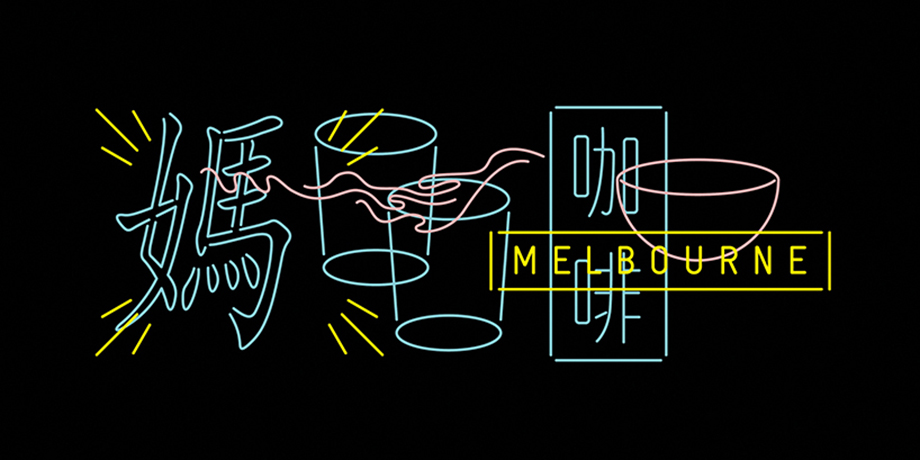
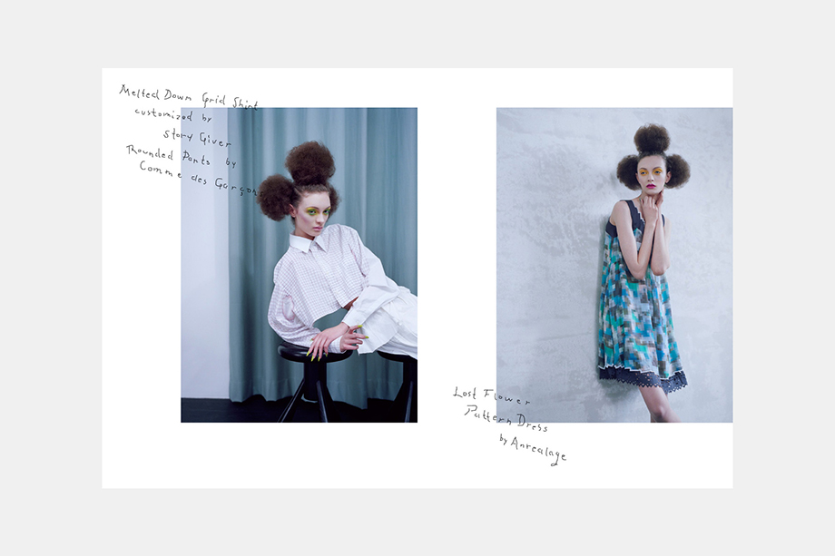
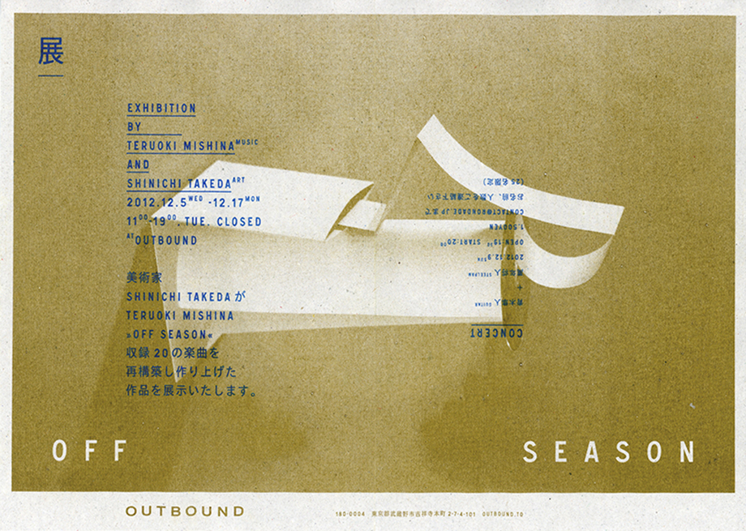
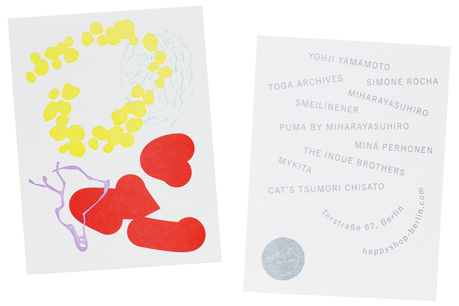

Interview with Graphic Designers The Simple Society
We recently spoke to Miki Kadokura and Tilmann Steffen Wendelstein, the founders of
The Simple Society, a multi-disciplinary design office based in Tokyo and Berlin.
Please could you tell us how you met and why you decided to form The Simple Society?
We met in Tokyo where both of us were spending our formative years working in different design studios. Miki was working amongst others at the studio of Nobuo Nakagaki, a representative of the post-war generation of designers who established a new design ethic in Japan influenced by European Modernism. Tilmann was working at Bluemark (now Atsuki Kikuchi Ltd.) under Atsuki Kikuchi, one of the younger art directors who has gained more and more attention in recent years. We were a couple at that time and found out that we speak a common language in terms of design. So it felt natural to set up the studio together.
How would you describe The Simple Society design’s approach?
Concept based but playful in execution. Clear in terms of visual language but always with room for interpretation. We always try to infuse a poetic or narrative layer into our visuals, and usually some form of humor.
What attracted you to designing brand identities?
We love the process of researching and getting deep into the subject matter of a project. a new born brand is much like that pot whale in the hitchhiker’s guide to the galaxy that accidentally materializes in space. It has a fully developed brain but doesn’t have any words yet for the phenomena around it. So it starts making up words for things that are deemed important. That’s kind of how it feels to form a language and through that a character for a brand from scratch. You just start with all possibilities and narrow them down bit by bit. Sadly the pot whale had a very short life, which is of course the exact opposite of what we would like to achieve for a brand. Goodbye pot whale and thanks for the metaphor.
Who would your ideal client or project be?
The ideal is to work with someone who shares the same sense of humor as ourselves. If we can laugh together with a client in the first meeting we know the project is going to go well. It’s also great to work with people who can look at something they have never seen before and perceive in a pure and neutral way without preconceptions.
"Concept based but playful in execution. Clear in terms of visual language but always with room for interpretation. We always try to infuse a poetic or narrative layer into our visuals, and usually some form of humor."
Which designers working today do you admire the work of?
Kaoru Kasai for his poetic visual language. He is a true master. Masayoshi Nakajo for having cracked the code for timelessness – he is fresh, young and aggressive even at high age. Kazunari Hattori for his ever refreshing idiosyncratic style. Issay Kitagawa for being totally nuts but still functionalist, he’s also a great humorist in design. Atsuki Kikuchi for combining radical conceptualism with strong and intriguing visuals.
What are your thoughts on specialization vs generalization?
They both have their time to shine. As designers, we obviously have to be specialists in design, but in order to communicate with people who are not designers we need to be able to think beyond our field. We obviously lean more towards the generalist side with our approach. We like to be free in choosing the best media for a certain content and don’t want to get stuck with only one thing that we happen to be specialists in. But we also value specialization when it’s needed. We obsess over details and enjoy improving our skills in different techniques. But as soon as we are at a point where we should ask a specialist to be part of a project we happily do so – those would be photographers, editors, developers etc. And we cherish their expertise very much.
Do you both draw and do you think it’s important for a graphic designer to be able to draw?
A blank page and a pencil are still the most important tools in design. There is just much more interaction between your mind and the medium than with a computer. You have to think harder, are less distracted and need more effort to get a pleasing result. After all the real world doesn’t work in RGB. If you draw on paper you can assess and appreciate the virtual world much better. You have to go through reality first in order to realize hyperreality so to speak. An other advantage is that most clients simply love drawings.
What’s the biggest lesson you have learned since you set-up The Simple Society?
That a well trained instinct is the most important thing.
Besides your work, what are you passionate about and why?
Language – at what point does the information that is accumulated through perception by humans, animals and plants transform into language. History – how will the age we live in compare to those before and after it? Gardens – how to design nature within nature and what’s the difference between inside and outside.
Do either of you have any superstitious beliefs, rituals or theories that you apply to your everyday life?
‘Everything has an end, only sausages have two’ is a theory we find compelling. In terms of rituals it’s maybe cooking lunch. It’s fun, it clears the mind and it’s healthier for the interns.
What do you want to do in 2014 that you have never done before?
To work with Arabic script and, so we can realize that, work with an Arabic client. We’d also love find clients from Iceland or Papua New Guinea.

Visual identity for The Wonder Kafé, an Asian themed café in Melbourne, 2013

Editorial design of ten pages in the Polish magazine, MAJ, 2013

Flyer for musician Teruoki Mishina, 2012

Shop card for the high fashion select shop, Happy Shop, in Berlin, 2012